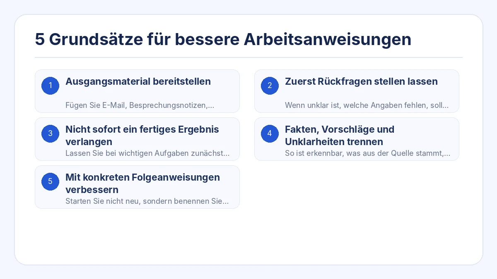
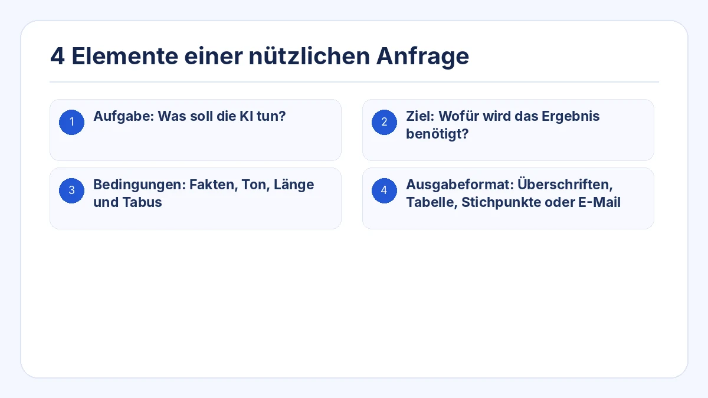
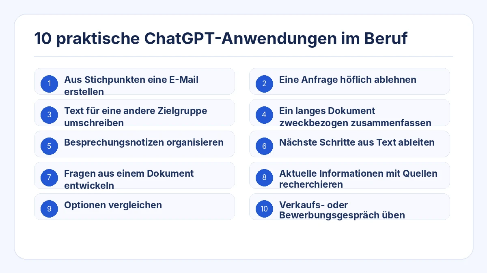
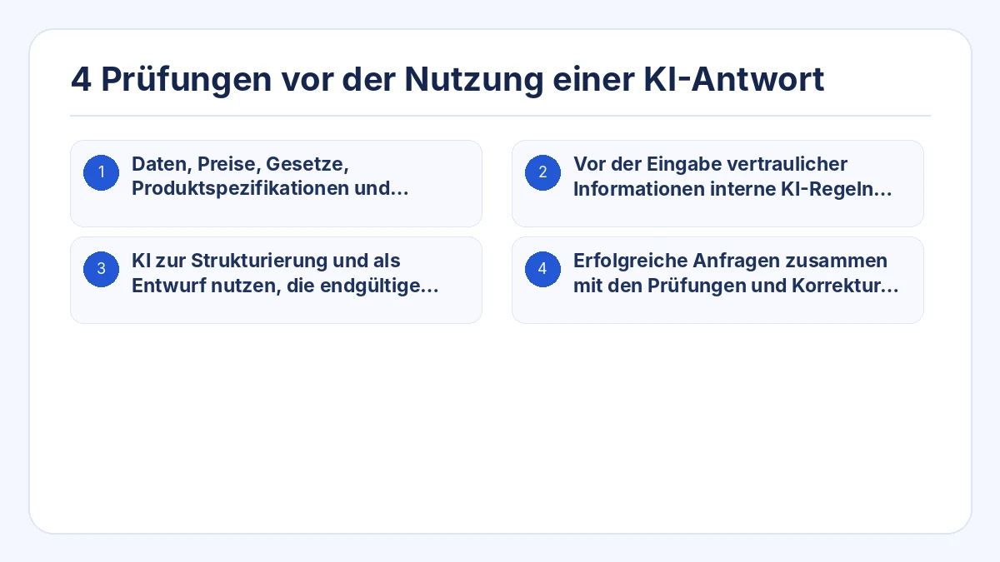

Dieser Leitfaden zeigt eine praktische Methode für den Einsatz von ChatGPT im Berufsalltag. Es geht nicht darum, einen magischen Prompt auswendig zu lernen, sondern Kontext, Bedingungen und Ausgabeformat passend zur Aufgabe vorzugeben.
Sie können die Vorlage kopieren, die Angaben in eckigen Klammern ersetzen und das Ergebnis vor der Verwendung prüfen.
Das Wichtigste
- Ausgangsmaterial bereitstellen, statt die KI alles neu erfinden zu lassen.
- Bei fehlenden Informationen zuerst Rückfragen anfordern.
- Komplexe Aufgaben in Planung, Prüfung und Ausarbeitung aufteilen.
- Bei wichtigen Entscheidungen Fakten, Vorschläge und Unklarheiten trennen.
- Die erste Antwort prüfen und mit gezielten Folgeanweisungen verbessern.

1. Ausgangsmaterial bereitstellen
Fügen Sie E-Mail, Besprechungsnotizen, Entwurf, Daten oder Stichpunkte ein, auf denen die Antwort beruhen soll. Untersagen Sie das Hinzufügen nicht belegter Fakten.
2. Zuerst Rückfragen stellen lassen
Wenn unklar ist, welche Angaben fehlen, soll ChatGPT die Lücken erkennen und höchstens drei Fragen stellen, bevor es die Antwort erstellt.
3. Nicht sofort ein fertiges Ergebnis verlangen
Lassen Sie bei wichtigen Aufgaben zunächst Gliederung oder Inhalte vorschlagen. Prüfen Sie die Richtung und fordern Sie erst danach den finalen Text an.
4. Fakten, Vorschläge und Unklarheiten trennen
So ist erkennbar, was aus der Quelle stammt, was die KI empfiehlt und was noch von einer Person bestätigt werden muss.
5. Mit konkreten Folgeanweisungen verbessern
Starten Sie nicht neu, sondern benennen Sie die Änderung: kürzer, ruhigerer Ton, Schlussfolgerung zuerst oder unbelegte Aussage entfernen.
4 Elemente einer nützlichen Anfrage
Ersetzen Sie die Angaben in eckigen Klammern durch Ihre Situation. Weisen Sie die KI an, fehlende Fakten nicht zu erfinden und offene Fragen getrennt aufzulisten.
- Aufgabe: Was soll die KI tun?
- Ziel: Wofür wird das Ergebnis benötigt?
- Bedingungen: Fakten, Ton, Länge und Tabus
- Ausgabeformat: Überschriften, Tabelle, Stichpunkte oder E-Mail

## Aufgabe
Erstellen Sie eine Antwort auf die folgende Kundennachricht.
## Ziel
Das Problem anerkennen, bestätigte Informationen nennen und den nächsten Schritt verständlich machen.
## Ausgangsmaterial
[Kundennachricht und intern bestätigte Fakten einfügen]
## Bedingungen
- Keine nicht bestätigte Wiederherstellungszeit versprechen.
- Bestätigte Fakten von noch offenen Punkten trennen.
- Einen ruhigen, professionellen Ton verwenden.
- Keine Informationen ergänzen, die nicht im Ausgangsmaterial stehen.
## Ausgabeformat
1. Betreff
2. E-Mail-Text
3. Vor dem Versand zu bestätigende Punkte10 praktische ChatGPT-Anwendungen im Beruf

1. Aus Stichpunkten eine E-Mail erstellen
Empfänger, Ziel, Inhalte, Frist und Ton angeben.
2. Eine Anfrage höflich ablehnen
Grenze, kommunizierbaren Grund und realistische Alternative nennen.
3. Text für eine andere Zielgruppe umschreiben
Fakten beibehalten und Erklärung für Kunden, Führungskräfte oder Einsteiger anpassen.
4. Ein langes Dokument zweckbezogen zusammenfassen
Leser und zu unterstützende Entscheidung definieren.
5. Besprechungsnotizen organisieren
Entscheidungen, Aufgaben, Verantwortliche, Termine und offene Punkte extrahieren.
6. Nächste Schritte aus Text ableiten
Lesestoff von tatsächlich auszuführenden Aufgaben trennen.
7. Fragen aus einem Dokument entwickeln
Lücken, Widersprüche, Risiken und Klärungsbedarf erkennen.
8. Aktuelle Informationen mit Quellen recherchieren
Datum, Primärquellen und Trennung von Fakten und Interpretation verlangen.
9. Optionen vergleichen
Kriterien und Prioritäten der konkreten Situation definieren.
10. Verkaufs- oder Bewerbungsgespräch üben
Rolle, Szenario, Gesprächsregeln und Bewertung festlegen.
4 Prüfungen vor der Nutzung einer KI-Antwort
- Daten, Preise, Gesetze, Produktspezifikationen und Quellenlinks prüfen.
- Vor der Eingabe vertraulicher Informationen interne KI-Regeln beachten.
- KI zur Strukturierung und als Entwurf nutzen, die endgültige Entscheidung aber bei einer verantwortlichen Person belassen.
- Erfolgreiche Anfragen zusammen mit den Prüfungen und Korrekturen speichern, die das Ergebnis brauchbar gemacht haben.

Häufige Fragen
Ist ein längerer Prompt immer besser?
Nein. Entscheidend ist, ob die für die Aufgabe nötigen Informationen enthalten sind. Zu viel Hintergrund kann wichtige Bedingungen verdecken.
Was tun, wenn die Antwort nicht den Erwartungen entspricht?
Die konkrete Abweichung benennen: Länge, Zielgruppe, Struktur, Ton oder Vermischung von Fakten und Vorschlägen.
Wie nutze ich ChatGPT, wenn ich nicht weiß, was ich fragen soll?
Lassen Sie sich zuerst befragen: „Stelle mir jeweils eine Frage, bis du genug Informationen für diese Aufgabe hast.“
Aus einer Aufgabe eine arbeitsfertige KI-Anfrage erstellen
Strukturierte KI-Anfragen erstellen, ohne bei null zu beginnen
Prompt Ready bietet berufliche Einsatzfälle wie Nachrichten beantworten, Meetings organisieren, Texte anpassen, Optionen vergleichen, recherchieren und Gespräche üben. Aufgabe auswählen, Inhalt und Bedingungen ergänzen und Anfrage kopieren.
Prompt Ready ist eine App für Windows und macOS, mit der sich strukturierte Anfragen für ChatGPT, Gemini, Claude und andere KI-Dienste erstellen lassen. Aufgabe auswählen, Ausgangstext und Bedingungen ergänzen und eine fertige Anfrage kopieren.
Prompt Ready verarbeitet den Text lokal und sendet ihn nicht automatisch an einen externen KI-Dienst oder den Server des Entwicklers. Sobald Sie die Anfrage in einen KI-Dienst einfügen, gelten dessen Datenschutzregeln.
Mit einer echten Aufgabe beginnen und die Anfrage im Dialog verbessern
Wählen Sie eine reale Aufgabe wie Kundenantwort, Meeting-Nachbereitung oder Optionenvergleich. Ergänzen Sie Ziel, Bedingungen und Format und behandeln Sie die erste Antwort als Entwurf.